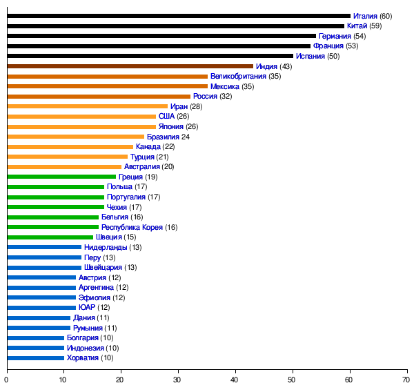
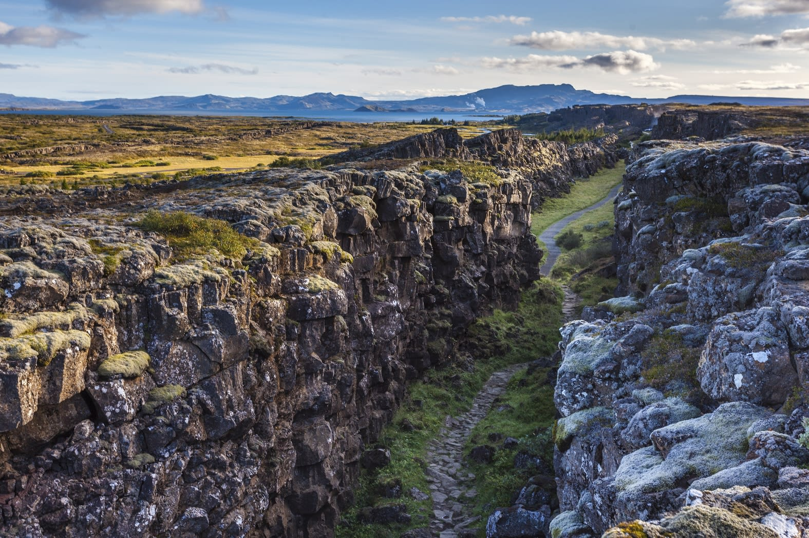

Объекты ЮНЕСКО и ООПТ в мире (6)
UNESCO - специализированная организация в составе ООН, которая включает достопримечательности в список всемирного наследия
Создана 16 ноября 1945 года
Штаб-квартира находится в Париже
Важно понимать, что ЮНЕСКО - не только про достопримечательности, но и про вопросы грамотности/национальных культур/проблемы социальных наук/геологии и т.п
{kind=link}
Критерии внесения во Всемирное наследние ЮНЕСКО
Засчет стремления к объективности были составлены оценочные критерии (10 штук). Они подразделяются на 2 основные группы:
Культурные критерии:
- (I) Объект представляет собой шедевр человеческого созидательного гения. = шедевр
- (II) Объект свидетельствует о значительном взаимовлиянии человеческих ценностей в данный период времени или в определённом культурном пространстве, в архитектуре или в технологиях, в монументальном искусстве, в планировке городов или создании ландшафтов. = иллюстрирует взаимодействие на развитие чего-либо
- (III) Объект является уникальным или, по крайней мере, исключительным для культурной традиции или цивилизации, которая существует до сих пор или уже исчезла. = иллюстрация прошлого
- (IV) Объект является выдающимся примером конструкции, архитектурного или технологического ансамбля, или ландшафта, которые иллюстрируют значимый период человеческой истории. = исторически важный контекст
- (V) Объект является выдающимся примером человеческого традиционного сооружения, с традиционным использованием земли или моря, являясь образцом культуры (или культур) или человеческого взаимодействия с окружающей средой, особенно если она становится уязвимой из-за сильного влияния необратимых изменений. = иллюстрация локальной культуры в экологическом контексте
- (VI) Объект напрямую или вещественно связан с событиями или существующими традициями, с идеями, верованиями, с художественными или литературными произведениями и имеет исключительную мировую важность. (По мнению комитета ЮНЕСКО, этот критерий предпочтительно использовать вместе с каким-либо ещё критерием или критериями). = связь с важными мировыми событиями/традициями
Природные критерии:
- (VII) Объект представляет собой природный феномен или пространство исключительной природной красоты и эстетической важности. = очень красиво или уникально
- (VIII) Объект является выдающимся образцом главных этапов истории Земли, в том числе памятником прошлого, символом происходящих геологических процессов в развитии рельефа или символом геоморфологических или физико-географических особенностей. = геохронологический памятник
- (IX) Объект является выдающимся образцом происходящих экологических или биологических процессов в эволюции и развитии земных, пресноводных, береговых и морских экосистем и растительных и животных сообществ. = показал процесс эволюции некоторого вида
- (X) Объект включает в себя наиболее важную или значительную естественную среду обитания для сохранения в ней биологического многообразия, в том числе исчезающих видов исключительной мировой ценности с точки зрения науки и охраны. = исключительное биологическое разнообразие
Существуют и смешанные объекты - культурные ландшафты. Они включаются в список по совокупности природных и культурных критериев.
Исключения из списка ЮНЕСКО
За всё время такой “чести” удостоились лишь 3 объекта:
- (2007) Резерват аравийского орикса (Оман 🇴🇲) не прекратили охоту на этого самого орикса, а также сократили заповедные территории
- (2009) Дрезденская долина Эльбы (Германия 🇩🇪) построили мост в охранной зоне
- (2021) Ливерпуль (Великобритания 🇬🇧) утеря городом признаков, передающих уникальность
Топ стран по количеству объектов ЮНЕСКО
Италия (60) 🇮🇹
Китай (59) 🇨🇳
Германия (54) 🇩🇪
Франция (53) 🇫🇷
Испания (50) 🇪🇸
Дальше идёт Индия (43), Великобритания с Мексикой (по 35) и Россия (32, но это без учета Крыма)
В остальных государствах — менее 30 объектов.
{kind=link}

Мировые ООПТ и ЮНЕСКО (по отдельности)
Европа:
- Национальный парк Тингведлир (Исландия) 🇮🇸
{kind=link}

- Этот парк занимает особое место в истории страны, так как именно здесь, начиная с 930г, собирался древний исландский парламент - Альтинг
- Здесь проходит рифтовый разлом Сильфа, который является границей Северо-Американской и Евразийской плит
- Озеро Тингваллавтн - самое большое озеро Исландии
- Национальный парк Юстедалсбреэн (Норвегия) 🇳🇴

- Тут находится самый большой континентальный ледник Европы (Юстедалсбреэн) - имеет 5 ответвлений
- Также тут есть фермы, которые были поглощены данным ледником в 1750г
- Беловежский национальный парк (Польша/Беларусь) 🇵🇱🇧🇾

- Тут находится объект ЮНЕСКО - Беловежская пуща
- Представляет собой наиболее крупный остаток реликтового леса, который произрастал на территории Европы до начала ее активного хозяйственного освоения человеком.
- В национальном парке обитают зубры
- Здесь находится водораздел Черного и Балтийского морей
- Национальный парк Аггтелек (Венгрия) 🇭🇺

- Национальный парк включен в список наследия ЮНЕСКО
- Находится на севере Венгрии на территории пещерного района Аггетелек
- Типичный образец карстового региона - его территория покрыта многочисленными известковыми скалами, множество пещер, образующих лабиринты
- Национальный парк Плитвицкие озера (Хорватия) 🇭🇷

- Озера данного парка включены в список ЮНЕСКО
- Воды реки Корана (144км), текущие сквозь известняк, за тысячи лет образовали барьеры травертина - естественные плотины, которые, в свою очередь, создали ряд живописных озер, водопадов и пещер
- Дельта Дуная (Украина/Румыния) 🇺🇦🇹🇩

- Дельта Дуная - вторая по величине речная дельта Европы (после дельты Волги). Площадь (4152км2) из которых 83% в Румынии и 17% в Украине
- Внесена в список наследия ЮНЕСКО
- Известна как место обитания аистов и пеликанов
- Мостовая гигантов (Великобритания) 🇬🇧

- Находится в Северной Ирландии
- Дорога и побережье Козвэй-Кост, на котором находится мостовая входят в список ЮНЕСКО
- Представляет собой базальтовые столбы, которые образовались в результате извержения древнего подводного вулкана. Самая высокая из базальтовых колонн имеет высоту 12м.
- Национальный парк Доньяна (Испания) 🇪🇸

- Представляет собой национальный парк в Андалусии (юго-запад Испании) и входит в список ЮНЕСКО
- В парке охраняются сосновые леса на дюнах океанского побережья и болота в устье реки Гвадалквивир (657км)
- На зимовку ежегодно сюда прилетает свыше 500 тысяч птиц
- Известен еще тем, что здесь обитает наибольшее количество испанских рысей.
Азия:
- Древний город Иераполис и источники Памуккале (Турция) 🇹🇷

- Оба входят в состав природного и культурного памятника ЮНЕСКО
- В том месте, где насыщенные кальцием термальные воды выходят на поверхность высокого холма, сформировался ландшафт “Памуккале” - хлопковая крепость. Предстает в виде террасных ванн из кальция - травертины
- Древний город был основан 4000 лет назад неподалеку от горячих источников.
- Национальный парк Гёреме (Турция) 🇹🇷

- Представляет собой музей под открытым небом в Каппадокии - объект ЮНЕСКО
- Представлен ландшафтом, сформированным процессом эрозии. В древности здесь была зона вулканизма и были крупные массивы вулканов, но со временем в результате эндогенных процессов лавовое плато превратилось в столбы характерного вида (Перибаджаралы)
- Здесь сосредоточено множество вырезанных в скалах пещерных церквей и христианских монастырей - памятники византийского искусства. Более того - есть целые пещерные города.
- Национальный парк Сагарматха (Непал) 🇳🇵

- Тоже включен в список ЮНЕСКО
- Находится в Гималаях, недалеко от Катманду на северо-востоке Непала
- Это самая высокогорная охраняемая территория на Земле. Парк лежит на склонах Эвереста
- Территория национального парка составляет 114800га. Северная граница парка проходит на границе с Китаем. В южной части парка представлены 2 зоны, в которых любая деятельность человека запрещена
- Национальный парк Казиранга (Индия) 🇮🇳

- Включен в список наследия ЮНЕСКО
- Парк расположен в центре штата Ассам и является одной из немногих областей в Восточной Индии с нетронутой человеком природой
- Здесь обитают однорогие носороги (крупнейшая популяция), тигры, слоны, пантеры и медведи
- Национальный парк Сундарбан (Индия) 🇮🇳

- Представляет собой часть самого большого мангрового леса в мире, расположенного в дельте Ганга, в основном в Бангладеш 🇧🇩
- Входит в список наследия ЮНЕСКО
- Влажный тропический климат способствовал возникновению в этой местности уникального растительного комплекса, соединяющего в себе растения из Юго-Западной Азии, Эфиопии, Полинезии
- Бухта Халонг (Вьетнам) 🇻🇳

- Объект списка наследия ЮНЕСКО
- Находится в Тонкинском заливе Южно-Китайского моря и представляет собой множество одиночных вершин, которые образовались вследствие башенного карста
- По легенде здесь жил дракон, который разломал все своим хвостом, оставив только одиночные скалы
- Национальный парк Пуэрто-Принцесса (Филиппины) 🇵🇭

- Находится на Филиппинах на острове Палаван и входит в список ЮНЕСКО
- Парк находится в районе горного хребта Сент-Пол (2351м) в северной части острова. Вход в пещеру находится со стороны города Сабанг.
- Парк расположен в зоне развития карста. Река протекает под землей, в пещере, и ее длина составляет 8,2км
- Национальный парк Гунунг-Мулу (Малайзия) 🇲🇾

- Входит в список ЮНЕСКО
- Находится на Калимантане и охватывает невероятное количество пещер и карстовых образований + горные дождевые леса
- Здесь находится крупнейшая пещера Азии - Гуа-Эир-Джерни, имеющая длину 189км
- Здесь находится крупнейший грот в мире - Саравак в пещере Лубанг Насиб Багус
- Национальный парк Кинабалу (Малайзия) 🇲🇾

- Находится в списке наследия ЮНЕСКО
- Является первым национальным парком Малайзии и знаменит своей разнообразной флорой и фауной - орхидеи и плотоядные растения (Непентес Раджа)
- Национальный парк Комодо (Индонезия) 🇮🇩

- Входит в список наследия ЮНЕСКО.
- Расположен на Малых Зондских островах (Комодо, Падар, Ринча).
- Заповедник создан в первую очередь для защиты уникальных Комодских варанов - гигантских ящеров длиной до 3х метров и весом до 150кг.
- Национальный парк Лоренц (Индонезия) 🇮🇩

- Является самой большой природоохранной территорией в Юго-Восточной Азии
- Находится в провинции Папуа на острове Новая Гвинея. В парке находится высочайшая гора Океании - Джая (4884м) + горные тропические леса
- Национальный парк Три параллельные реки (Китай) 🇨🇳

- Восемь участков данного нац. парка входят в список наследия ЮНЕСКО
- Расположен в Сино-Тибетских горах в провинции Юньнань. На территории парка располагаются верховья трех крупнейших рек Азии: Янцзы, Меконга и Салуина, которые протекают в ущельях до 3000м
- Реки текут практически параллельно с севера на юг, потом Янцзы сворачивает в ущелье Прыгающего тигра
- Горы Сираками (Япония) 🇯🇵

- Горы Сираками-Санти (1087м) включены в список наследия ЮНЕСКО
- Представляет собой труднодоступную местность на севере острова Хонсю и включает последние уцелевшие участки девственных буковых лесов умеренного-холодного климата
Африка:
- Национальный парк Салонга (ДРК) 🇨🇩

- Входит в список наследия ЮНЕСКО
- Салонга является самым крупным из числа африканских резерватов, располагающихся в зоне экваториальных лесов. Он находится в центральной части бассейна реки Конго, и достижим только по воде, много эндемиков и девственные леса.
- Национальный парк Вирунга (ДРК) 🇨🇩

- Входит в список наследия ЮНЕСКО
- Является одним из старейших национальных парков Африки и был основан в 1929 году
- Ландшафты на территории нац. парка очень разнообразны, здесь можно встретить травянистые и древесные саванны, низкорослые постоянно влажные леса, бамбуковые заросли и т.д. Здесь обитают горные гориллы .
- На территории парка располагаются крупные горы Вирунга, которые являются частью Восточно-Африканского разлома + много вулканов - Карисимби (4507м) + озеро Альберт
- Национальный парк Горы Рувензори (Уганда) 🇺🇬

- Входит в список наследия ЮНЕСКО
- Здесь расположены очень высокие горы Рувензори - в частности, топ-3 по высоте вершина Африки - Стэнли (5109м).
- Заснеженные пики Рувензори возвышаются над сухими приэкваториальными долинами. Снежные поля и ледники с водопадами делают национальный парк одним из наиболее красивых мест в Африке.
- Парк известен богатым видовым разнообразием произрастающих в нем растений - много из них растут на высоте до 4000м.
- Национальный парк Серенгети (Танзания) 🇹🇿

- Расположен в одноименном засушливом регионе на границе Кении и Танзании в районе Великого Африканского Разлома.
- Низкотравные холмистые долины площадью 30т км2. Их покрывает сочная трава, которая прекрасно растет на плодородной почве вулканического происхождения
- Тут очень много животных - антилопы, зебры, носороги, жирафы, слоны, львы, гиены, бегемоты
- Заповедник Нгоронгоро (Танзания) 🇹🇿

- Кратер Нгоронгоро включен в список наследия ЮНЕСКО
- Образовался в результате коллапса вулкана 2,5млн лет назад. Глубина - 610м, высота - 2286м
- Кратер знаменит своей огромной популяцией фламинго + там есть своя среда обитания многих организмов
- Национальный парк Килиманджаро (Танзания) 🇹🇿

- Является объектом наследия ЮНЕСКО
- Расположен в одноименной области Танзании около города Аруша
- Занимает 756км2, создан для охраны высочайшей вершины Африки - Килиманджаро (5895м). Подножие горы находится на высоте 1829м
- Водопад Виктория (Замбия/Зимбабве) 🇿🇲🇿🇼

- Входит в список наследия ЮНЕСКО
- Представляет собой водопад на реке Замбези (2660км). Имеет высоту 120м и более километра в ширину
- Открыт в 1855г Дэвидом Ливингстоном, который и назвал данный водопад именем Британской королевы
- Национальный парк Крюгера (ЮАР) 🇿🇦

- Старейший национальный парк ЮАР
- Множество животных - слон, леопард, кабан, носорог, буйвол
- Национальный парк Гарахонай (Испания, Канары) 🇪🇸

- Включен в список наследия ЮНЕСКО.
- Известен своими скалами (назван в честь одноименной скалы высотой 1484м). Находится на островах Гомера.
- Также здесь произрастают лавровые влажные субтропические вечнозеленые леса - монтеверде
Северная Америка:
- Йеллоустонский национальный парк (США) 🇺🇸

- Входит в список объектов наследия ЮНЕСКО (Вайоминг, Айдахо, Монтана)
- Является первым в мире национальным парком!
- Известен своими гейзерами, источниками и природой. Озеро Йеллоустон является крупнейшим высокогорным озером в Северной Америке (2357м)
- Йеллоустонская кальдера - крупнейшая вулканическая кальдера Северной Америки - супервулкан.
- Национальный парк Олимпик (США) 🇺🇸

- Находится в штате Вашингтон на полуострове Олимпик
- Этот национальный парк знаменит, прежде всего разнообразием видов. Благодаря длительной изоляции полуострова, здесь сформировалась своеобразная флора и фауна - например, в западной части парка растет дождевой лес
- Также здесь есть ледники на горном хребте Олимпик-Маунтинс (2427м)
- Национальный парк Редвуд (США) 🇺🇸

- Включен в список всемирного наследия ЮНЕСКО. Находится в Калифорнии
- Представляет собой девственные дождевые леса умеренного климата.
- Парк покрыт древними лесами секвойи. Эти деревья являются одной из самых высоких и массивных на Земле. Кроме лесов секвойи, парк сохраняет исконную флору этих мест, пастбища прерий, культурные ресурсы, части рек и ручьев + 60км нетронутой береговой линии.
- Йосемитский национальный парк (США) 🇺🇸

- Находится в Калифорнии на западных слонах горного хребта Сьерра-Невада
- Почти 95% нац. парка принадлежит к зоне дикой природы
- Знаменит своими водопадами: Йосемитский (739м), Сноу-Крик (652м), Сентинел (585м), Риббон (492м), Невада (180м), а также огненным водопадом Лошадиный Хвост (650м) - в феврале можно увидеть редкое явление, когда лучи закатного солнца отражаются в падающем потоке водопада, и он становится похож на струю огня.
- Национальный парк Гранд-Каньон (США) 🇺🇸

- Находится в Аризоне и входит в список всемирного наследия ЮНЕСКО
- Представляет собой гигантский каньон реки Колорадо (2334км)
- Гранд-Каньон не является самым глубоким на Земле, однако он известен благодаря своим размерам и пейзажам. Максимальная глубина - 1829м, а ширина достигает 29км
- Образовался из-за вертикальных поднятий 65млн лет назад вследствие которых уклон реки Колорадо увеличился и усилилась флювиальная денудация.
- Национальный парк Грейт-Смоки-Маутинс (США) 🇺🇸

- Расположен на востоке страны и поделен поровну между двумя штатами - Теннеси и Северной Каролиной
- Является самым посещаемым национальным парком США - 9,5млн туристов в год
- Тут представлены нетронутые древние леса, в основном это вариации широколиственного: Аппалачский лес, Северный смешанный лес, Елово-Пихтовый лес, Тсуговый лес, Дуброво-сосновый лес
- Также тут есть достопримечательности, связанные с индейцами и первыми переселенцами. Чироки называли эти горы голубыми и дымными, так как миллионы деревьев и растений создают высокую влажность, и над лесом поднимается туман
- Национальный парк Карлсбадские пещеры (США) 🇺🇸

- Является объектом наследия ЮНЕСКО и находится в штате Нью-Мексико в пустыне Чиуауа
- Главная достопримечательность - цепь из 80 карстовых Карлсбадских пещер, для которых характерно разнообразие и высокий эстетичный вид минеральных образований. Возраст пещер около 250млн лет
- Национальный парк Мамонтова пещера (США) 🇺🇸

- Находится в штате Кентукки и является объектом ЮНЕСКО
- Мамонтова пещера является самой длинной в мире - 676км. Названа она так именно из-за своих размеров, а не из-за мамонтов.
- Необычайно сухая, сотканная из крепчайших горных пород, уникальная пещера украшена естественными застывшими водопадами. Дно пещеры изрезали естественные реки, одна впадает в подземное озеро, а другая прорезает пещеру насквозь.
- Национальный парк Долина Смерти (США) 🇺🇸

- Находится на границе штатов Калифорния и Невада - к востоку от Сьерры-Невады в пустыне Мохаве
- Представляет собой межгорную впадину. Здесь находится самая низкая точка Северной Америки (-86м) - Badwater
- Здесь была зафиксирована самая жаркая температура на земле +56,7С
- В долине смерти проживает индейское племя Тимбиша.
- Свое название Долина смерти получила из-за массовой гибели людей во время золотой лихорадки в Калифорнии в 1849г
- Долина монументов (США) 🇺🇸

- Находится на стыке штатов Аризона и Юта
- Представляет собой останцы из красного песчаника, которые образовались в результате дефляции из-за ветров в плато Колорадо
- Тут есть месторождения урана, меди и ванадия
- Данная область является священной для индейского племени Навахо, так что тут часто находят петроглифы с изображениями чего-либо
- Национальный парк Эверглейдс (США) 🇺🇸

- Огромный болотный комплекс на юге штата Флорида, включенная в список наследия ЮНЕСКО
- Территория парка сильно подверглась антропогенному влиянию, в частности здесь находятся урбанизированные районы Майами
- На территории парка есть естественные мангровые заросли, а также здесь обитают ламантины, аллигаторы и множество других животных
- Парки и резерваты Клуэйн, Рангел-Сент-Элайас, Глешер-Бей и Татшеншини-Алсек (США/Канада) 🇺🇸🇨🇦

- Система парков, находящаяся в Британской Колумбии и Аляске занесена в список наследия ЮНЕСКО
- Состоит из уникальных ледниковых полей, ледников, а также из-за обитания в них гризли, северных оленей, баранов Далла + горы Святого Ильи (Логан 5247м)
- Парки Канадских Скалистых гор (Канада) 🇨🇦

- Система более чем из 7 национальных парков включена в список наследия ЮНЕСКО
- Парки изобилуют горными пиками, ледниками, озерами, водопадами, каньонами и известняковыми пещерами, что формирует поразительный высокогорный ландшафт.
- Бёрджес-Шейл - место обнаружения уникальных окаменелых остатков обитателей древних морей.
- Здесь протекают такие реки как Колумбия (2000км), Северный Саскачеван (1287км), Атабаска (1231км), Фрейзер (1370км)
- Национальный парк Вуд-Баффало (Канада) 🇨🇦

- Находится на границе Альберты и Северо-Западных Территорий и входит в список наследия ЮНЕСКО.
- Является крупнейшим национальным парком Канады и одним из крупнейших в мире.
- Находится между озерами Атабаска и Большое Невольничье в поясе сухих бореальных хвойных лесов с умеренно прохладным климатом, долгой и холодной зимой, но с теплым летом. Здесь соседствуют прерии и луга.
- Парк известен своей огромной популяцией американских бизонов.
- Острова и ОПТ в районе Калифорнийского залива (Мексика) 🇲🇽

- Объект, располагающийся на северо-западе Мексики, включает 244 участка - островов и отрезков побережья Калифорнийского залива, сосредоточенных в пределах 9 парков и резерватов - объект ЮНЕСКО
- Здесь отмечено 695 видов сосудистых растений - это больше, чем на любом другом объекте всемирного наследия, как морском, так и наземном
- Более 890 видов рыбы, 90 из которых - эндемики. Также здесь встречаются 39% от общемирового числа видов морских млекопитающих, в частности, примерно треть общемирового числа видов морских китообразных.
- Заповедник Себастьян-Вискаино (Мексика) 🇲🇽

- Расположен в центральной части Калифорнийского полуострова и является объектов списка ЮНЕСКО
- Располагается в одноименном заливе и является крупнейшим резерватом Латинской Америки
- Тут огромное количество разных животных - койоты, грызуны, бакланы, а также множество китов: серые и синие + морские слоны и львы
- Впервые территория полуострова была заселена индейцами кочими еще 11т лет назад, в некоторых пещерах можно заметить следы их творчества
- Мезоамериканский барьерный риф (Мексика/Гватемала/Белиз/Гондурас) 🇲🇽🇬🇹🇧🇿🇭🇳

- Представляет собой морской регион, простирающийся более чем на 1126км вдоль побережья Мексики, Гватемалы, Белиза и Гондураса - Крупнейший барьерный риф Северного полушария.
Южная Америка:
- Национальный парк Канайма (Венесуэла) 🇻🇪

- Природный парк на границе с Бразилией и Гайаной в штате Боливар занесен в список ЮНЕСКО
- Главной достопримечательностью являются тепуи - столовые горы в Гвианском плоскогорье. Они образовались из-за денудации древнего плато, мягкие породы вымылись, а твердый песчаник и гранит остались. Самая известная - Рорайма.
- Тут находится высочайший водопад мира - Анхель (979м) на реке Кереп.
- Национальный парк Жау (Бразилия) 🇧🇷

- Национальный парк входит в список наследия ЮНЕНСКО
- Самый большой лесной заповедник в Южной Америке, площадь около 25 тысяч км2
- Является хорошим примером сохранения амазонских лесов (сельвы). Тут обитают ламантины, ягуары, речные дельфины.
- Заповедник Пантанал (Бразилия, Парагвай, Боливия) 🇧🇷🇵🇾🇧🇴

- Заповедник Пантанал является объектом всемирного наследия ЮНЕСКО
- Данный болотный комплекс является самым крупным в мире болотом (195 тыс км2)
- Находится в экорегионе Гран-Чако, здесь есть 2 ярко выраженных сезона: зимой тут засуха, так что часть болот превращается в солончаки, а летом - сплошное озеро.
- Тут обитает свыше 10млн крокодилов, около 3500 видов растений, 650 видов птиц, 230 видов рыб, 80 видов млекопитающих.
- Национальный парк Игуасу (Аргентина) 🇦🇷

- Входит в список всемирного наследия ЮНЕСКО
- Находится на северо-востоке Аргентины
- Водопады Игуасу - комплекс из 275 водопадов на реке Игуасу (1320км) на границе Аргентины и Бразилии. Его высота около 82м.
- Около водопадов находятся субтропические атлантические леса Аргентины и ГЭС Итайпу.
- Национальный парк Чако (Аргентина) 🇦🇷

- Расположен в центральной части экорегиона Гран-Чако (тропический континентальный засушливый климат)
- Здесь протекает река Рио-Негро (635км)
- Здесь произрастает редкое дерево квебрахо
- Национальный парк Лос-Гасьярес (Аргентина) 🇦🇷

- Данный национальный парк входит в список наследия ЮНЕСКО
- Находится на юге Патагонии в Аргентинской провинции Санта-Крус. Парк является вторым по величине природоохранным объектом в Аргентине
- 40% территории парка покрыто вечными ледниками, которые питаются с огромной ледяной шапки в Патагонских Андах. Оледенение начинается на высоте 2500м, ледники сползают до 200м, тая и эродируя ближайшее пространство, часто ледники заканчиваются в озерах и Тихом океане
- Тут расположено множество гор, а также озер. Озеро Лаго-Архентино является крупнейшим в Аргентине.
- Полуостров Вальдес (Аргентина) 🇦🇷

- Является объектом ЮНЕСКО
- Большая часть полуострова представляет собой незаселенную территорию. Тут имеется несколько соленых озер, урез воды одного из них находится на отметке -40м над уровнем моря
- Полуостров имеет большое значение для сохранения морских млекопитающих. Это место размножения исчезающего южного кита, морских слонов и морских львов. Также здесь водятся касатки.
- Национальный парк Рапануи (Чили) 🇨🇱

- Является объектом всемирного наследия ЮНЕСКО
- Рапануи - это местное название острова Пасхи. Сообщество полинезийского происхождения проживает здесь с IV века, создав скульптуры Моаи.
- Находится в юго-восточном углу Полинезийского треугольника. Остров имеет вулканическое происхождение, здесь расположен потухший вулкан Рано-Кау.
- Галапагосские острова (Эквадор) 🇪🇨

- Острова являются объектом наследия ЮНЕСКО
- Острова представляют собой следствие мантийного плюма, поэтому на них много вулканов.
- В основном нац. парк создан для защиты животных - галапагосская черепаха, тюлень, олуша, пеликан
Австралия и Океания:
- Национальный парк Улуру-Ката-Тьюта (Австралия) 🇦🇺

- Данный парк является объектом ЮНЕСКО
- Основную ценность здесь представляет инзельберг Улуру - останец древнего хребта, подвергшийся эрозии
- Климат здесь можно назвать даже резко-континентальным (летом +45, зимой -5). Растительность представлена полупустынными ландшафтами, а также акациями, эвкалиптами, гревиллеей.
- Влажные тропики Квинсленда (Австралия) 🇦🇺

- Является объектом наследия ЮНЕСКО
- Представляет собой влажные тропические леса на северо-восточном побережье Австралии, отличающийся большим разнообразием рельефа (реки, водопады, горы)
- Включает в себя 3 георегиона - Район Большого Водораздельного Хребта, район Больших утесов и прибрежные равнины. Раньше на этой территории был развит вулканизм, поэтому тут можно встретить лавовые конуса и кратерные озера.
- Тут находится высочайший водопад Австралии - Уолламен (305м)
- Национальный парк Какаду (Австралия) 🇦🇺

- Является объектом наследия ЮНЕСКО
- Находится на полуострове Арнем-Ленд, который представляет собой горное плато
- Название полуостров получил от народа Какаду, который раньше проживал на этой территории
- В парке имеются древние наскальные рисунки (самым древним около 18 тыс. лет).
- Большой Барьерный риф (Австралия) 🇦🇺

- Является объектом наследия ЮНЕСКО
- Представляет собой крупнейший в мире коралловый риф. Состоит из более чем 2900 коралловых рифов, расположенных вдоль северо-восточного побережья Австралии
- В коралловых рифах имеется своя уникальная экосистема и животный мир. Также развит туризм.
- Национальный парк Блу-Маунтинс (Австралия) 🇦🇺

- Национальный парк находится на юго-востоке Австралии в горном хребте Голубые горы (часть Большого Водораздельного хребта).
- Представляет собой изрезанное ущельями горное плато. Здесь находятся скалы Три Сестры.
- Залив Шарк (Австралия) 🇦🇺

- Является объектом ЮНЕСКО
- Находится на Северо-Западе Австралии около города Перт
- Залив известен тем, что на площади около 4000км2 его дно покрывают специальные водоросли, в которых обитают редкие виды планктона.
- Национальный парк Фьордленд (Новая Зеландия) 🇳🇿

- Является крупнейшим национальным парком Новой-Зеландии (12,5 тыс. км2 площадь)
- Известен своими фьордами Тасманового моря. Также своими природными объектами - озеро Манапоури (глубочайшее в Новой Зеландии - 444м в глубину) + озеро Те-Анау (270м). Горы в этом регионе имеют высоту около 2746м.
- Здесь расположен высочайший водопад Новой Зеландии - Браун (836м)
- Климат — умеренный морской, но очень влажный >4000мм осадков. Из-за влажности здесь произрастают влажные тропические леса (на склонах гор)
- Очень много эндемиков - какапо, такахе, киви, скалистый крапивник, пингвины
- Национальный парк Гавайские вулканы (США) 🇺🇸

- Является объектом наследия ЮНЕСКО
- На территории парка находятся активные вулканы Килауэа (1243м) и Мауна-Лоа (4169м).
- Большую часть парка занимает вулканическая пустыня Кау, которая сложена вулканическими отложениями. Растительности тут нет из-за постоянных кислотных дождей, которые выпадают из вога (вулканический смог - смесь вулканических газов и водяного пара).